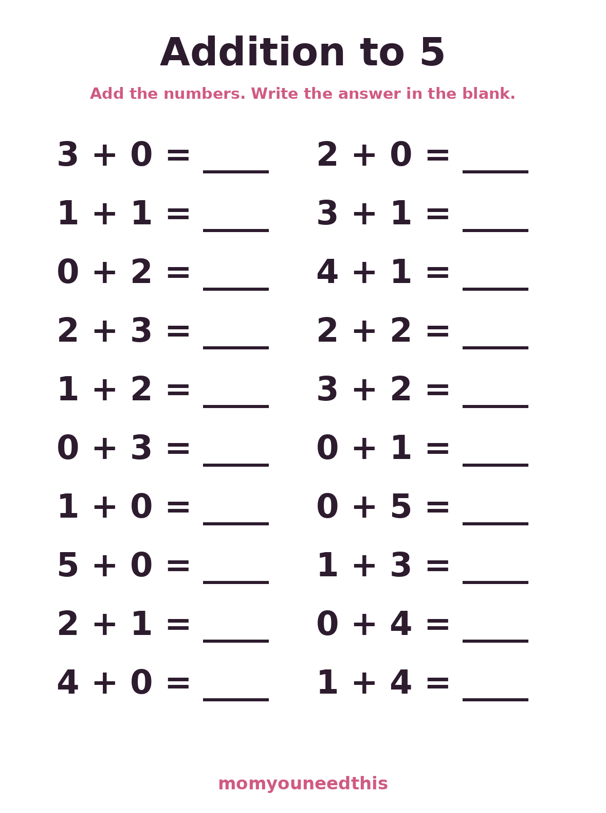
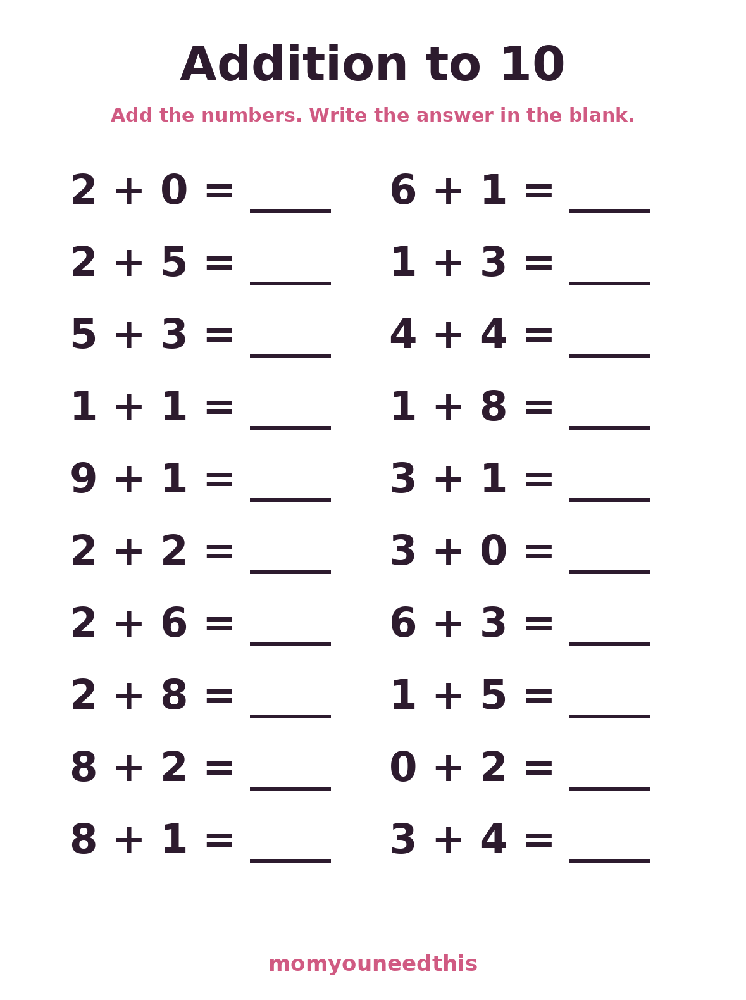
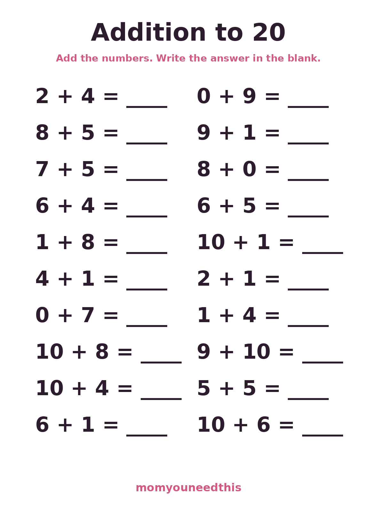

Addition Worksheets
Short, friendly math practice in three steps: addition to 5, to 10, and to 20. Each sheet has 20 problems in big, clear numbers — no clutter, no timers. For ages 5 to 7, learning what the plus sign means. Start at the level that feels easy, one sheet at a time, with counters nearby for the problems that make them pause. Everything is free, with no signup.
Last updated: October 20, 2026
Quick Answer
These free addition worksheets give early math practice at three levels: sums to 5, to 10, and to 20, with 20 problems on every sheet. Big clear numbers, nothing else on the page, and no answers printed — you check together. Start at the level that feels easy. No signup.
At a Glance
- Ages: 5–7 (kindergarten–grade 1)
- What you get: 3 worksheets — addition to 5, to 10 and to 20 (20 problems each)
- Answers: none printed — made to check together
- Cost: Free — no signup, no email
🔢 Addition to 5
The starter sheet. Its 20 problems cover every addition fact with a sum of 5 or less — 1 + 1, 2 + 3, 4 + 1 and all their friends — so finishing it means the whole first fact family is in place. Perfect for kindergarteners meeting addition for the first time, and small enough that every problem can be acted out with five counters on the table.

⬇️ Download Your Free Addition Worksheet
Addition to 5 — 20 problems, sums of 5 or less
⬇️ Open Free Printable 🖨️ Print🎁 Free printables for ages 5–7 — no signup needed
🔢 Addition to 10
The core kindergarten and early first-grade sheet: 20 problems with sums up to 10, including the important doubles (4 + 4, 5 + 5) and the pairs that make ten. Fingers are a legitimate strategy here — ten fingers are exactly the tool this sheet is built around. When these facts start feeling quick, your child is ready for the next level.

⬇️ Download Your Free Addition Worksheet
Addition to 10 — 20 problems, sums of 10 or less
⬇️ Open Free Printable 🖨️ Print🎁 Free printables for ages 5–7 — no signup needed
🔢 Addition to 20
The first-grade step up: addends up to 10 and sums up to 20, like 9 + 10, 10 + 8 and 7 + 5. This is where strategies appear — counting on from the bigger number, or making a ten first (9 + 1, then the rest). Twenty problems, no duplicates, and no answer key on the page, so the thinking stays with your child.

⬇️ Download Your Free Addition Worksheet
Addition to 20 — 20 problems, addends up to 10, sums of 20 or less
⬇️ Open Free Printable 🖨️ Print🎁 Free printables for ages 5–7 — no signup needed
📖 How to Use These Worksheets
A worksheet is only paper until a grown-up turns it into a routine. Four habits make these sheets actually teach:
- Start with real objects. Before the pencil comes out, act out two or three problems with counters: three buttons plus two buttons, push them together, count the pile. Addition is just joining groups, and hands understand that before eyes understand symbols.
- One sheet a day is enough. Twenty problems is a full session for a five- to seven-year-old. Short daily practice sticks far better than a stack of sheets on Saturday, and stopping while it is still going well keeps tomorrow's sheet welcome.
- Say it out loud. Have your child read each problem as a sentence — "six plus four equals ten" — before writing the answer. Speaking the problem builds the link between the symbols on the page and the quantities they stand for.
- Celebrate the effort, check together. Praise the careful counting, not just the right answers, and review the sheet side by side when it is done. A wrong answer checked together with counters is a lesson; a wrong answer marked in red pen is just a disappointment.
📈 Progress Will Be Uneven — and That's Fine
Expect progress to be uneven, and that is fine. A child might fly through addition to 5, then stall for weeks on sums that cross ten — that jump, from counting every object to counting on from the bigger number, is the biggest mental leap in early math. Keep the easier sheet in the rotation for confidence while the harder one slowly gets familiar. Fluency comes from seeing the same small facts many times, in short cheerful doses, until one day the answer is simply known.
🎯 Which Level Fits Right Now?
Not sure which level fits right now? Sit with your child while they try the middle sheet, Addition to 10. If they finish it happily in about five minutes, with fingers or counters but without tears, that is their level — stay there for a week or two before stepping up. If it feels like a slog by problem eight, drop back to Addition to 5 without making a thing of it; confidence at the easier level is what makes the harder one click later. And when a sheet starts coming back fast and flawless two days running, that is the signal to move up: the next level reuses the same facts inside bigger sums, so nothing learned is ever wasted.
🗺️ What's Next for Math Practice
These worksheets live in the Older Kids section, alongside reading practice like the sight word flashcards and handwriting help like the cursive worksheets. For younger siblings — or for a gentler on-ramp into numbers — the Learning Activities hub has counting, number recognition and pattern practice made for preschoolers. The path is simple: master the facts to 5, then to 10, then to 20, and your child walks into first-grade math already knowing what addition feels like from the inside.
❓ Frequently Asked Questions
What age are these addition worksheets for?
These worksheets are made for children roughly ages 5 to 7, in kindergarten and first grade. The Addition to 5 sheet suits kindergarteners who are just meeting the plus sign, Addition to 10 fits most kindergarten and early first-grade practice, and Addition to 20 is the first-grade step up, with addends up to 10 and sums up to 20.
Is there an answer key?
No — and that is on purpose. Every problem on these sheets uses small numbers, so you and your child can check each answer together in seconds with fingers or a handful of counters. Checking together is part of the learning: your child explains how they got the sum, and you catch misunderstandings right away instead of a week later.
How many problems are on each sheet?
Each sheet has 20 problems, arranged in two columns of ten. That is enough to give a real feeling of accomplishment and to show which facts are sticking, without being so many that a young child tires out halfway down the page. One sheet a day is a good rhythm for most kids.
Which addition worksheet should my child start with?
Start with Addition to 5, even if you think it might be easy. Its 20 problems cover every addition fact with a sum of 5 or less, so it shows you exactly which basics are solid. When your child can finish it confidently — ideally explaining a few answers out loud — move up to Addition to 10, then Addition to 20.
Are these addition worksheets free?
Yes — all three worksheets on this page are completely free to print at home. No signup, no account and no email. Print a fresh copy whenever your child wants another round; the same facts met on different days are how they become automatic.